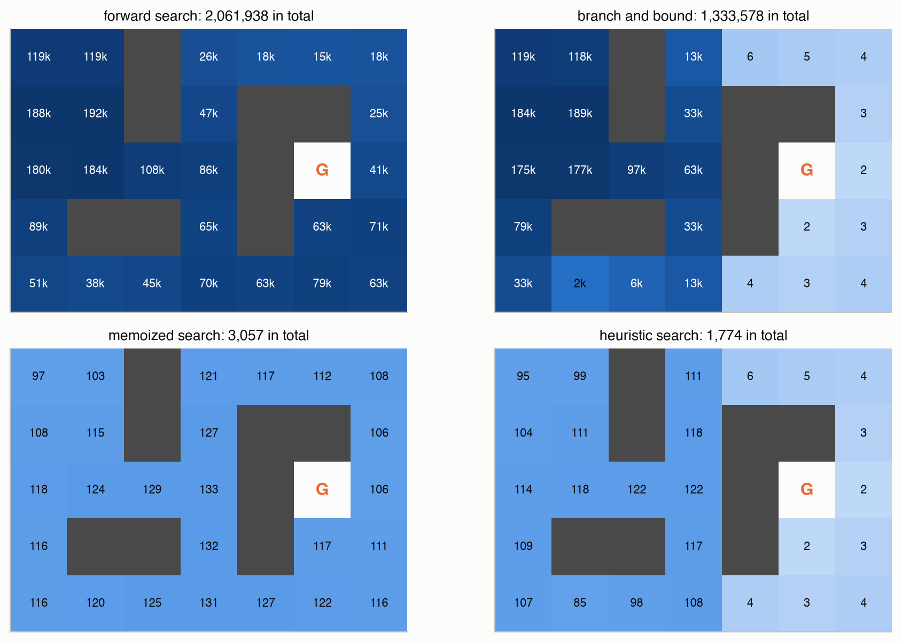

![A grid of 5 rows and 7 columns with dark wall cells. The goal G is in row 3, column 6. Each free cell shows two numbers. On the right side of the maze the two numbers match. On the left side the true distance is much larger than the Manhattan distance, because a wall column separates the left side from the goal; for example the top-left cell shows 11 and 7. An orange route runs from the top-left corner one cell east, down to row 2, east to column 3, down to the bottom row, east to column 5, and up into the goal.](e-search-algorithms_files/figure-html/fig-maze-output-1.png)
E · Search Algorithms
Appendices
A search problem is a decision problem with no randomness: each action leads to exactly one next state. It is the special case of an MDP (Chapter 7) with deterministic transitions, usually without discounting. Route finding, puzzles and many scheduling problems are search problems. The algorithms here are the deterministic versions of the online planners in Chapter 9, which add sampling and expectations to handle chance. This appendix follows ADM Appendix E with an original maze.
At a glance
| Method | Idea | Needs | Work on this maze (26 starts) |
|---|---|---|---|
| Forward search | try every action sequence to depth \(d\) | a leaf value \(U\) | 2,061,938 nodes |
| Branch and bound | skip actions whose upper bound can’t beat the best so far | lower and upper bounds | 1,333,578 nodes |
| Memoized search (dynamic programming) | remember each (depth, state) answer | memory for the table | 3,057 nodes |
| Heuristic search | memoized branch and bound, ordered by reward plus heuristic | an optimistic heuristic | 1,774 nodes |
The maze
The maze in Figure 1 has 27 free cells. The agent moves north, east, south or west into a free cell; walls and the border block movement. Every move earns \(-1\), entering the goal earns \(+10\) more, and the goal ends the episode. So from a cell \(\delta\) moves from the goal, the best return is \(10 - \delta\): reaching the goal is always worth it, and shorter is better.
Formally, a search problem has a state space \(\mathcal{S}\), the valid actions \(\mathcal{A}(s)\) in each state (none in an absorbing state such as the goal), a deterministic transition \(T(s, a)\) giving the next state, and a reward \(R(s, a)\).
Forward search
The best return with \(d\) moves left follows from the best returns one move later:
\[ U_d(s) = \max_{a \in \mathcal{A}(s)} \Big[ R(s, a) + U_{d-1}\big(T(s, a)\big) \Big], \qquad U_0(s) = U(s) \tag{1}\]
In words. The value of a state is the best, over actions, of the reward now plus the value of where that action leads.
Term by term.
- \(U_d(s)\): the best return from \(s\) with \(d\) moves left.
- \(R(s, a) + U_{d-1}(T(s, a))\): take \(a\), collect its reward, and continue optimally from the one state it leads to. With randomness this would be an expectation over next states (Chapter 7); here there is only one.
- \(U(s)\): a value estimate used at the depth limit. This page uses \(-10\) for any non-goal leaf, a pessimistic “didn’t get there” value, and 0 at the goal, which pays nothing more.
Why it holds. Any sequence of \(d\) moves is a first move followed by \(d - 1\) more, so its return is \(R(s, a)\) plus the return of the rest. The best sequence must continue with the best \(d - 1\) moves from \(T(s, a)\); otherwise swapping in a better continuation would improve it.
Forward search evaluates Equation 1 by plain recursion: from the start, try every action, recurse to depth \(d\), and back the values up. It builds a search tree: the start is the root, and each action adds a child. With \(\lvert\mathcal{A}\rvert\) actions the tree has \(O(\lvert\mathcal{A}\rvert^d)\) nodes. In the maze, cells have 2 or 3 exits, and searching to depth 12 from the top-left corner expands 119,398 nodes, even though there are only 27 cells. The tree is huge because the same cells are reached again and again by different paths, including paths that walk back and forth.
Branch and bound
Branch and bound skips parts of the tree that provably can’t contain a better answer. It needs an upper bound \(\overline{Q}(s, a)\) on the return after taking \(a\) in \(s\). It tries actions from the highest bound down, and as soon as the next action’s bound is no better than the best return already found, it stops: that action and all the remaining ones (whose bounds are lower still) are pruned.
For the maze, the Manhattan distance ignores walls, so it never overestimates the true distance and \(10 - \text{Manhattan}(s)\) never underestimates the value. So \(\overline{Q}(s, a) = R(s, a) + 10 - \text{Manhattan}(T(s, a))\) is a valid upper bound. Figure 2 shows the whole search from the cell just below the goal’s right neighbor, (3, 6).
Pruning is only as good as the bound. From 10 cells in the right part of the maze, branch and bound expands between 2 and 6 nodes. From the top-left corner, where the bound says 7 moves and the truth is 11, it expands 118,719, almost as many as forward search. Even from the bottom-left corner, where the bound is exact, it expands 32,753: moving north ties with moving east on the bound, the fixed action order tries north first, and the loose bounds on the far side of that branch make it expensive to rule out.
Dynamic programming
Equation 1 depends only on the state and the moves left, not on how the search got there. So the second time the search meets the same (moves left, state) pair, it can reuse the answer instead of searching again. Storing answers in a table is memoization, and it turns forward search into dynamic programming. At most 13 depths × 27 cells = 351 distinct pairs can be expanded, and in practice the searches from each start expanded between 97 and 133. From the top-left corner that is 97 nodes instead of 119,398.
Heuristic search
Heuristic search combines both ideas: memoize, and try actions in order of the immediate reward plus an optimistic estimate \(\overline{U}\) of the value afterward, pruning when that estimate can’t beat the best found:
\[ \overline{Q}(s, a) = R(s, a) + \overline{U}\big(T(s, a)\big) \tag{2}\]
In words. An action looks as good as its immediate reward plus the most the next state could possibly be worth.
Term by term.
- \(\overline{U}(s)\): the heuristic, an optimistic guess of the best return from \(s\). Here, \(10 - \text{Manhattan}(s)\).
- Sorting actions by \(\overline{Q}\) tries the most promising first; stopping when \(\overline{Q}(s, a)\) is at most the best found prunes the rest.
Why it holds. The search returns the optimal value if the heuristic is admissible, meaning it never underestimates: \(\overline{U}(s) \ge U^*(s)\). Then every pruned action’s true return is at most its bound, which is at most a value already found. Often the heuristic is also consistent: \(\overline{U}(s) \ge R(s, a) + \overline{U}(T(s, a))\) for every action, so the optimism never grows along a path. For the maze, one move changes the Manhattan distance by at most 1 and earns \(-1\) (or \(+9\) into the goal, where \(\overline{U}\) drops from 9 to 0), so the heuristic is both. Here the upper bound must also cover the leaf value: \(-10 \le \overline{U}(s)\) everywhere.
Figure 3 compares the work done by all four methods from every start. Heuristic search expanded 1,774 nodes in total, against 3,057 for memoization alone and 2,061,938 for forward search. The heuristic’s accuracy sets the savings: with the exact distances as the heuristic, it walks straight to the goal and expands only \(\delta + 1\) nodes from each start, 170 in total.

Where these ideas appear
| Idea here | Stochastic version on this site |
|---|---|
| Forward search | forward search over expected values (Chapter 9), and over beliefs (Chapter 22) |
| Branch and bound | branch and bound with value bounds (Chapter 9, Chapter 22) |
| Memoization, dynamic programming | value iteration, which tabulates \(U_d\) for all states at once (Chapter 7) |
| Heuristic search with an admissible heuristic | heuristic search with optimistic values (Chapter 9), and gap heuristic search (Chapter 22) |
Code
def forward_search(P: Search, s, d, U):
"""Try every action sequence of length d; value U(s) at the leaves."""
A = P.actions(s)
if not A or d <= 0:
return None, U(s), 1
best, nodes = (None, float("-inf")), 1
for a in A:
_, u, n = forward_search(P, P.T(s, a), d - 1, U)
nodes += n
if P.R(s, a) + u > best[1]:
best = (a, P.R(s, a) + u)
return best[0], best[1], nodes
def branch_and_bound(P: Search, s, d, U_lo, Q_hi):
"""Forward search that tries actions from the most promising upper
bound Q_hi(s, a) down, and stops as soon as no remaining action's
bound beats the best value found so far."""
A = P.actions(s)
if not A or d <= 0:
return None, U_lo(s), 1
best, nodes = (None, float("-inf")), 1
for a in sorted(A, key=lambda a: -Q_hi(s, a)):
if Q_hi(s, a) <= best[1]:
break # sorted: every later action is bounded lower
_, u, n = branch_and_bound(P, P.T(s, a), d - 1, U_lo, Q_hi)
nodes += n
if P.R(s, a) + u > best[1]:
best = (a, P.R(s, a) + u)
return best[0], best[1], nodes
def heuristic_search(P: Search, s, d, U_hi, U_lo, M=None):
"""Memoized branch and bound whose action bound is the immediate
reward plus an optimistic estimate of what follows,
R(s, a) + U_hi(T(s, a)). U_hi must never underestimate the value."""
M = {} if M is None else M
if (d, s) in M:
return (*M[(d, s)], 0)
A = P.actions(s)
if not A or d <= 0:
best, nodes = (None, U_lo(s)), 1
else:
bound = lambda a: P.R(s, a) + U_hi(P.T(s, a))
best, nodes = (None, float("-inf")), 1
for a in sorted(A, key=lambda a: -bound(a)):
if bound(a) <= best[1]:
break
_, u, n = heuristic_search(P, P.T(s, a), d - 1, U_hi, U_lo, M)
nodes += n
if P.R(s, a) + u > best[1]:
best = (a, P.R(s, a) + u)
M[(d, s)] = best
return best[0], best[1], nodes# The same maze. States are (row, col) tuples, 0-based like the Python
# code, so the numbers match the figures.
const ROWS = ["..#....", "..#.##.", "....#G.", ".##.#..", "......."]
const MOVES = [('N', (-1, 0)), ('E', (0, 1)), ('S', (1, 0)), ('W', (0, -1))]
const CELLS = Set((r - 1, c - 1) for r in eachindex(ROWS)
for c in 1:length(ROWS[r]) if ROWS[r][c] != '#')
const GOAL = (2, 5)
step(s, d) = (s[1] + d[1], s[2] + d[2])
actions(s) = s == GOAL ? [] : [m for m in MOVES if step(s, m[2]) in CELLS]
reward(s, m) = -1.0 + (step(s, m[2]) == GOAL ? 10.0 : 0.0)
manhattan(s) = abs(s[1] - GOAL[1]) + abs(s[2] - GOAL[2])
U_hi(s) = s == GOAL ? 0.0 : 10.0 - manhattan(s)
U_lo(s) = s == GOAL ? 0.0 : -10.0
# Returns (action, value, nodes expanded). M memoizes (depth, state).
function heuristic_search(s, d, M = Dict())
haskey(M, (d, s)) && return (M[(d, s)]..., 0)
A = actions(s)
if isempty(A) || d <= 0
best, nodes = (nothing, U_lo(s)), 1
else
bound(m) = reward(s, m) + U_hi(step(s, m[2]))
best, nodes = (nothing, -Inf), 1
# sort is stable, so ties keep N, E, S, W order, as in Python
for m in sort(A; by = bound, rev = true)
bound(m) <= best[2] && break
_, u, n = heuristic_search(step(s, m[2]), d - 1, M)
nodes += n
reward(s, m) + u > best[2] && (best = (m[1], reward(s, m) + u))
end
end
M[(d, s)] = best
return (best..., nodes)
end
a, u, n = heuristic_search((0, 0), 12)
println("from (0, 0): move ", a, ", value ", u, ", ", n, " nodes")
@assert u == 10 - 11
a, u, n = heuristic_search((3, 6), 12)
@assert (a, u, n) == ('N', 8.0, 3)